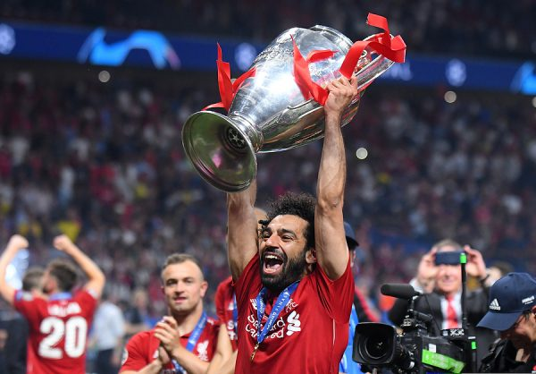
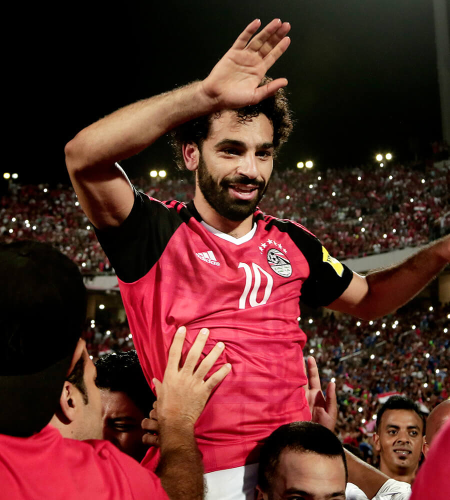

|  |
| UCL THROPY
picture by google |
Prestasi Bersama Klub
Mohamed salah mendapatkan banyak rekor seperti premier league golden boot setelah mencetak 32 gol dalam 36 pertandingan. salah mendapatkan penghargaan antara lain pfa players’ player of the year, football writers’ player of the year dan pfa fans’ player of the year pada musim 2017-2018. Salah meraih tempat ketiga untuk the 2018 best fifa men’s player. Salah juga menjadi pemain pertama yang memenangkan 3 Premier League Player of the Month dalam musim yang sama. Sedangkan untuk prestasi yang diraihnya bersama dengan liverpool, mohamed salah berhasil memenangkan trofi liga champions 2019, liga inggris musim 2019-2020 dan uefa super cup 2019.
|  |
| EGYPTIN
picture by google |
Prestasi Bersama Timnas
Sementara di level timnas, Salah membuat debutnya dengan timnas senior tahun 2011. Kala itu mewakili Mesir muda dengan berhasil memenangkan medali perunggu dalam africa u-20 cup of nations, dan berpartisipasi dalam 2011 fifa u-20 world cup dan 2012 summer olympics. Bahkan MO juga memenangkan caf most promising african talent tahun 2012. Selain itu mantan pemain liga italia ini juga membantu mesir mencapai final 2017 africa cup of nations, dan ia menjadi top skorer ketika kualifikasi caf untuk membantu mesir lolos ke 2018 fifa world cup. untuk performanya, Salah dinamai caf african footballer of the year dan bbc african footballer of the year. Mohamed salah juga terpilih dalam caf team of the year dan africa cup of nations team of the tournament.